Índice general
1. Manual de usuario
2
1.1. CU01: Configurar Sensor
2
1.2. CU02: Ver en vivo
5
1.3. CU03: Reproducir grabación
6
1.4. CU04: Grabar escena
7
1.5. CU05: Ver resultados
8
1.6. CU06: Gestionar persona
9
1.7. CU07: Gestionar escena
12
1.8. CU08: Seleccionar algoritmo de detección
15
1.9. CU09: Entrenar emoción
16
1.10. CU10: Exportar escena
18
1.11. CU11: Importar escena
20
1.12. Casos de uso extra
21
1.12.1. CUXX: Preferencias
22
1.12.2. CUYY: Gestionar Posturas
23
1
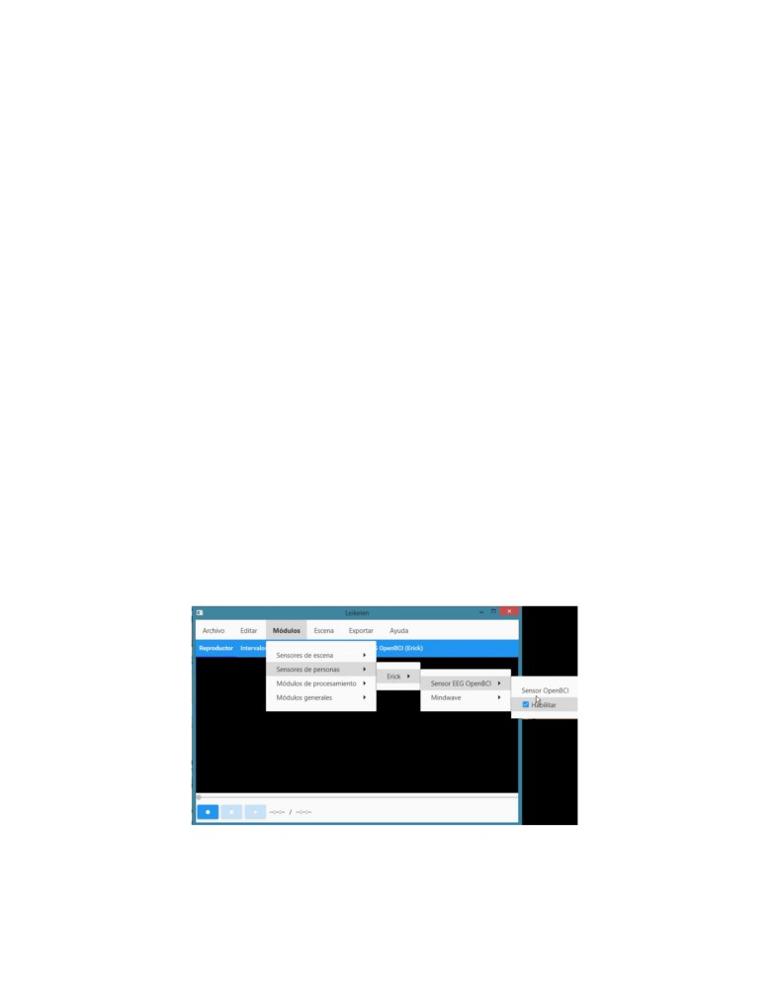
Capítulo 1
Manual de usuario
A continuación se explicará paso a paso cómo hacer cada uno de los casos de uso que la
aplicación tiene contempladas. Además, al final se añaden casos de uso extra que fueron heredados
por la aplicación antigua.
1.1. CU01: Configurar Sensor
El caso de uso principal de la aplicación es conectar y configurar el sensor de señales EEG
OpenBCI. Para ello, se necesita previamente haber creado una escena (lo cual puede verse más
adelante en La sección 1.7), y haber creado o añadido a la escena al menos una persona (lo cual
puede verse en la sección 1.6).
El primer paso para conectar sensor es habilitar el módulo de entrada para la persona respec-
tiva. Para ello diríjase a: Menú Herramientas > Sensores de personas > [nombre de la persona] >
Sensor EEG OpenBCI y haga click sobre "Habilitar" como se ve en la imagen 1.1.
Figura 1.1: CU01 - Habilitar Sensor
Una vez habilitado el módulo de entrada, haga click sobre el submenú "Sensor OpenBCI", el
cual se ubica justo arriba del anterior check, como se puede ver en la imagen 1.2.
2
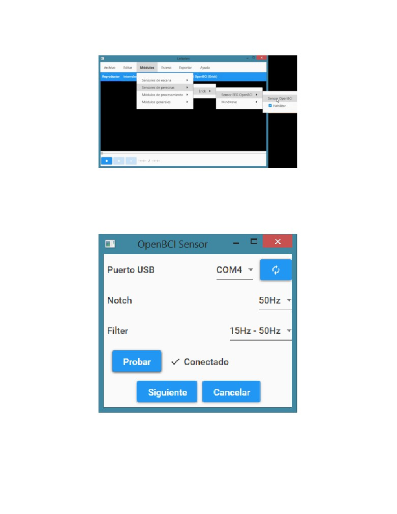
Figura 1.2: CU01 - Añadir Sensor
Aparecerá ante usted una ventana de conexión, donde podrá configurar el puerto de entrada
y distintos parámetros del sensor. Una vez esté todo ingresado pulse sobre "Probar" y luego en
"Siguiente", como puede observar en la imagen 1.3.
Figura 1.3: CU01 - Conectar
Aparecerá luego la ventana de configuración de las posiciones del sensor. El primer paso es
seleccionar el sistema de posicionamiento que usará, pudiendo usar ya sea el sistema 10/10 como
también el 10/20 (ver 1.4).
3
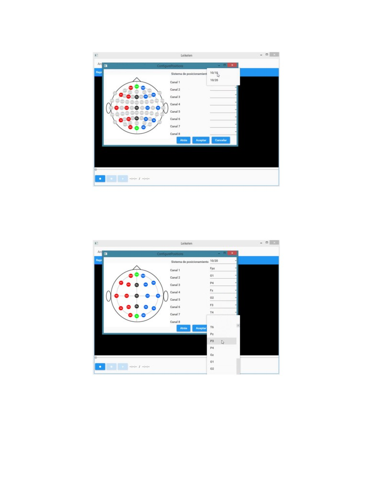
Figura 1.4: CU01 - Sistema Posicionamiento
Posterior a ello proceda a ingresar las posiciones de los distintos canales del sensor. Si tiene
menos de 8 canales conectados puede dejar los campos en blanco (ver 1.5).
Figura 1.5: CU01 - Sensor
Finalmente proceda a aceptar la configuración y confirmar el envío (ver 1.6).
4
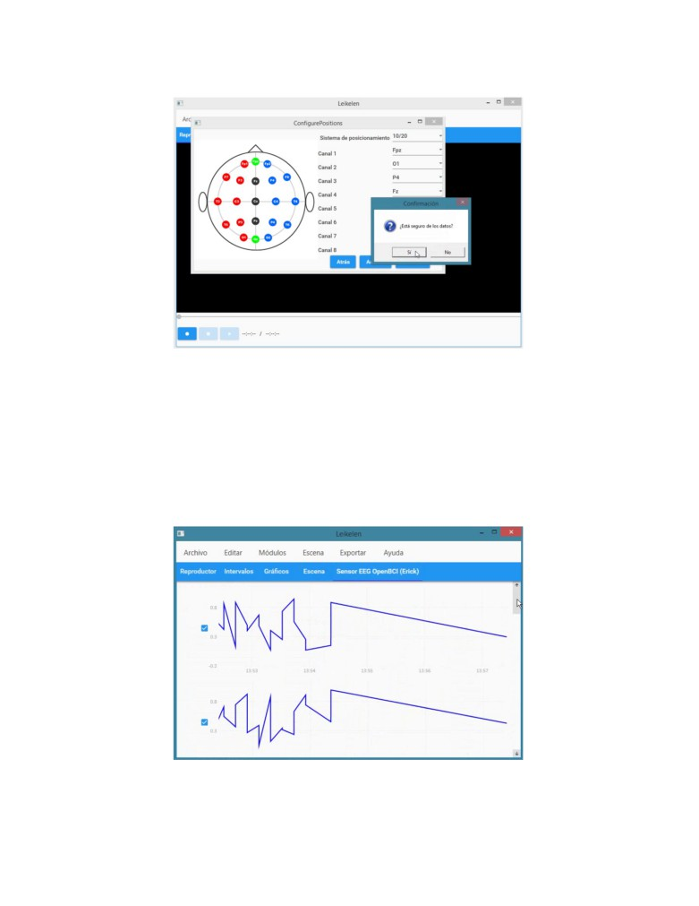
Figura 1.6: CU01 - Aceptar Configurar
1.2. CU02: Ver en vivo
Para poder ver en vivo debe previamente haber conectado y configurado el sensor EEG
OpenBCI, tal como se puede ver en la sección 1.1. Una vez realizado esto aparecerá automáti-
camente una pestaña para ver en vivo la señal, y entre paréntesis tendrá el nombre de la persona
que tiene conectado este sensor, tal y como se muestra en la imagen 1.7.
Figura 1.7: CU02 - Pestaña Test
5
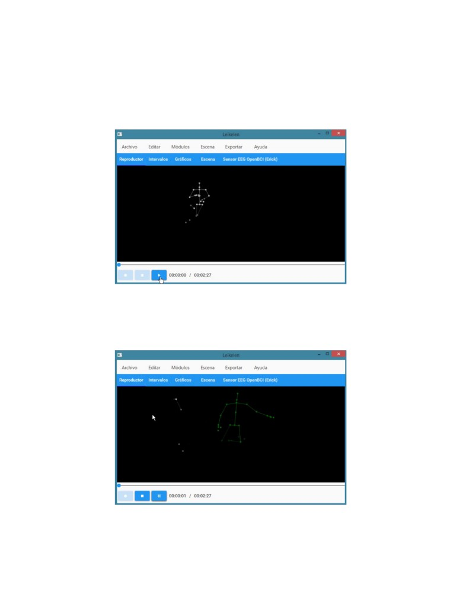
1.3. CU03: Reproducir grabación
Una vez tenga una escena en modo reproducción (ya sea después de exportarla, abrirla desde
la base de datos, cargada la escena de pruebas, o detenido una grabación), podrá reproducir la
escena haciendo click en el botón de play tal y como se ve en la imagen 1.8.
Figura 1.8: CU03 - Click
Una vez haya iniciado la reproducción, puede pausar ésta, o bien detenerla en cualquier mo-
mento haciendo click sobre los botones correspondientes como se ve en la imagen 1.9.
Figura 1.9: CU03 - Reproduciendo
6
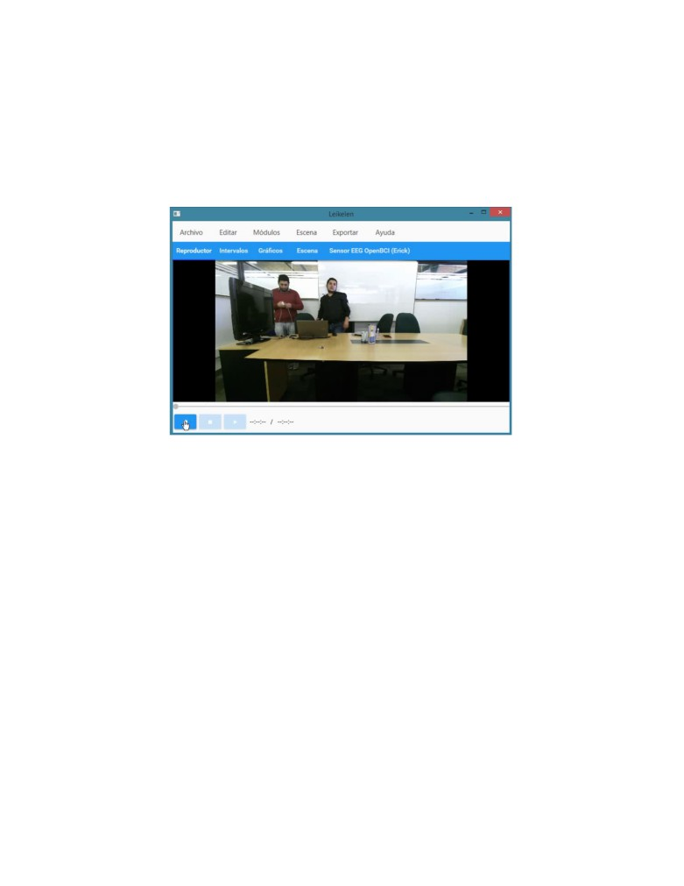
1.4. CU04: Grabar escena
Para poder grabar una escena debe tenerla creada (tal y como se puede ver en la sección 1.7).
Una vez creada la escena y después de haber habilitado y configurado los módulos de entrada y
procesamiento que se desee, simplemente proceda a hacer click sobre el botón de grabar como se
ve en la imagen 1.10
Figura 1.10: CU04 - GrabarClick
Una vez iniciada la grabación puede detenerla en cualquier momento haciendo click sobre
el botón stop (ver imagen 1.11). Luego de detener la grabación, se ejecutarán los procesamientos
programados que cada módulo de procesamiento tenga, y posteriormente se guardarán los datos
generados de la escena y quedará en modo reproducción.
7
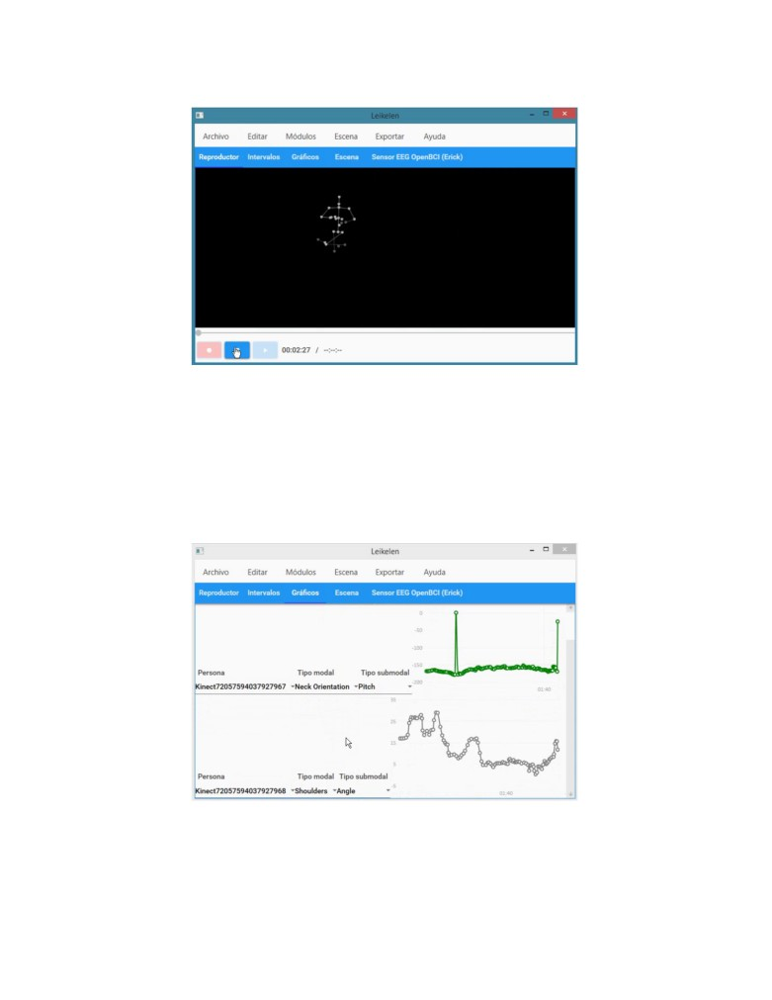
Figura 1.11: CU04 - GrabandoStop
1.5. CU05: Ver resultados
Para ver los resultados de una escena, ésta debe estar en modo reproducción. Existen 3 formas
de ver los resultados, éstas son: La pestaña de gráficos 2d (ver imagen 1.12), la pestaña de intervalos
(ver imagen 1.13), y finalmente un resumen de todos los datos (ver imagen 1.14).
Figura 1.12: CU05-01-Grafico
8
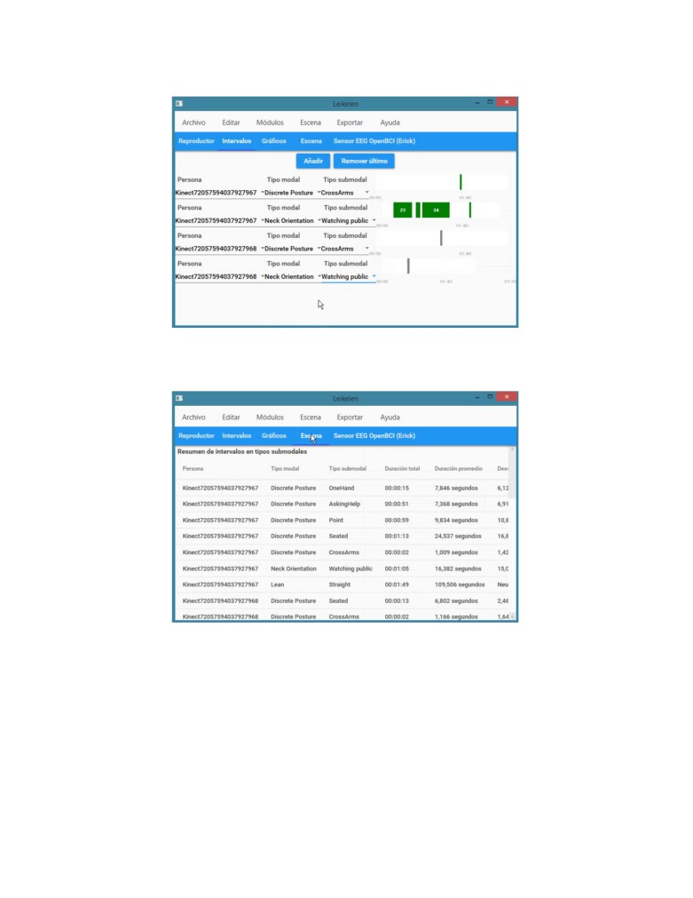
Figura 1.13: CU05-02-Intervalos
Figura 1.14: CU05-03-Resumen
1.6. CU06: Gestionar persona
Para ver las personas que están en la base de datos, en cualquier momento diríjase al menú
"Escena" y luego haga click en "Ver todas las personas" como se ve en la imagen 1.15.
9
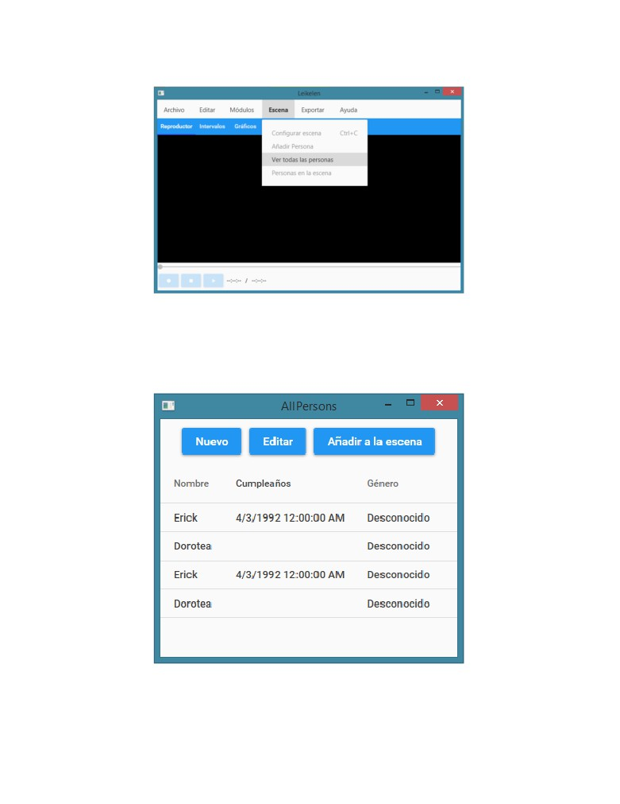
Figura 1.15: CU06-01-MenuVerPersonas
Se desplegará la ventana de personas, en la cual podrá ver los datos de las distintas personas,
y tendrá acceso a editar o agregar una persona, así como también agregar la persona seleccionada
a la escena actual (ver imagen 1.16).
Figura 1.16: CU06-02-VerPersonas
Para agregar una persona debe primero haber creado una escena y aún no empezado a grabar.
Luego diríjase al menú "Escena" y puede hacer click en "Agregar Persona", o bien ver todas las
10
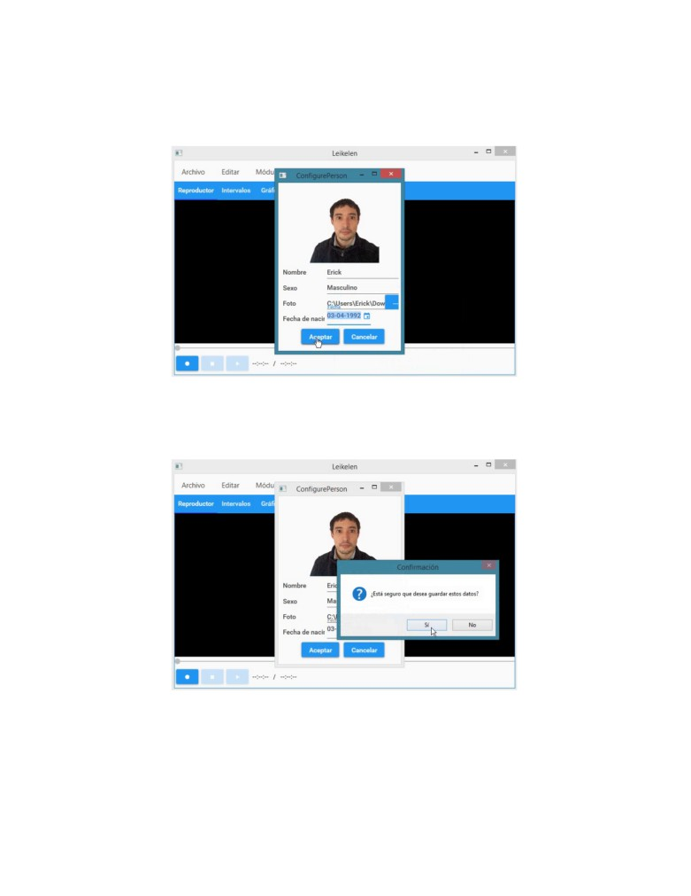
personas (haciendo click en "Ver todas las personas"), y luego hacer click en "Nueva". Aparecerá
antes usted una ventana donde podrá ingresar los datos de la persona (ver imagen 1.17).
Figura 1.17: CU06-03-CrearPersona
Una vez ingresados los datos, haga click en "Aceptar" y luego en "Sí" (ver 1.18).
Figura 1.18: CU06-04-AceptarCrear
Puede también editar una persona. Para ello, en la ventana de todas las personas, seleccione
la que desee editar y haga click sobre "Editar"; modifique los datos que desee cambiar, y proceda a
aceptar, como se ve en el ejemplo de la imagen 1.19.
11
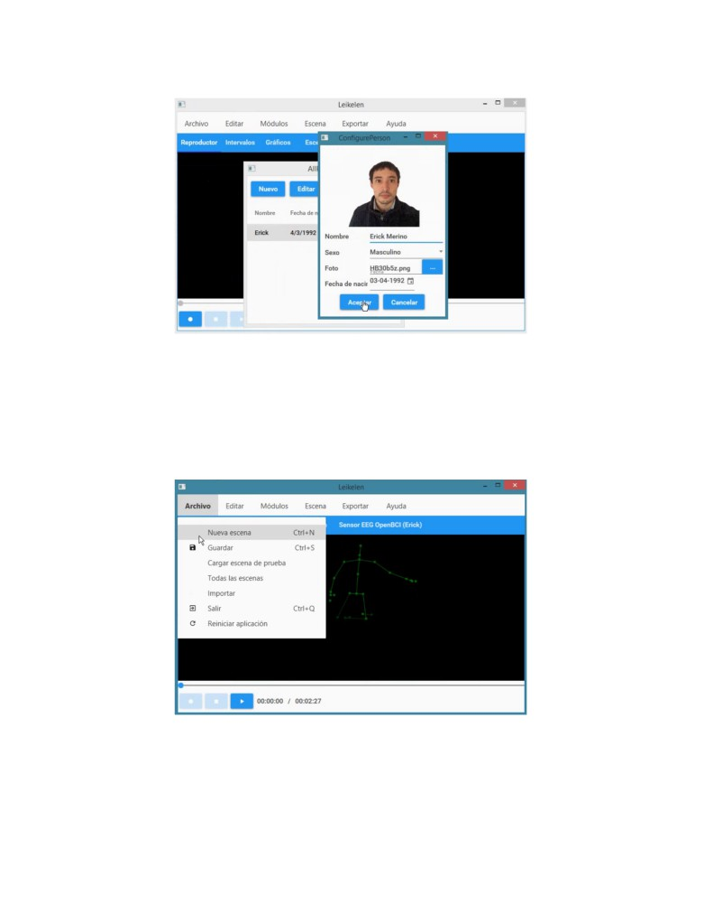
Figura 1.19: CU06-05-Editar
1.7. CU07: Gestionar escena
Para crear una escena, vaya al menú "Archivo", y luego haga click en "Nueva escena", como
se puede ver en la imagen 1.20.
Figura 1.20: CU07-01-MenuCrear
Se desplegará la ventana de configuración de la escena, en la cual puede ingresar los datos que
desee. Una vez ingresados, haga click en "Aceptar" y luego en "Sí" (tal y como se puede apreciar
en la imagen 1.21).
12
Figura 1.21: CU07-03-Creando
Para ver todas las escenas guardadas en la base de datos, diríjase al menú "Archivo", y luego
haga click en "Todas las escenas" (ver imagen 1.22).
13
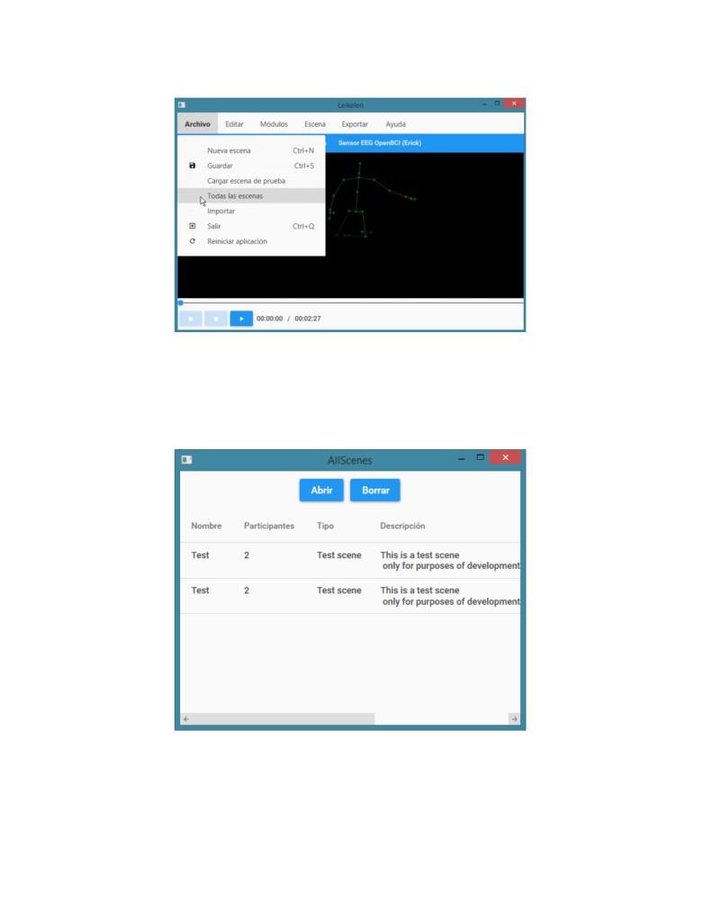
Figura 1.22: CU07-04-MenuEscenas
Una vez haya hecho click, se le desplegará una ventana en la cual podrá ver los datos de todas
las escenas guardadas en la base de datos. Puede seleccionar una escena y eliminarla, o abrirla para
ponerla en modo reproducción (según se aprecia en 1.23).
Figura 1.23: CU07-05-VentanaEscenas
14
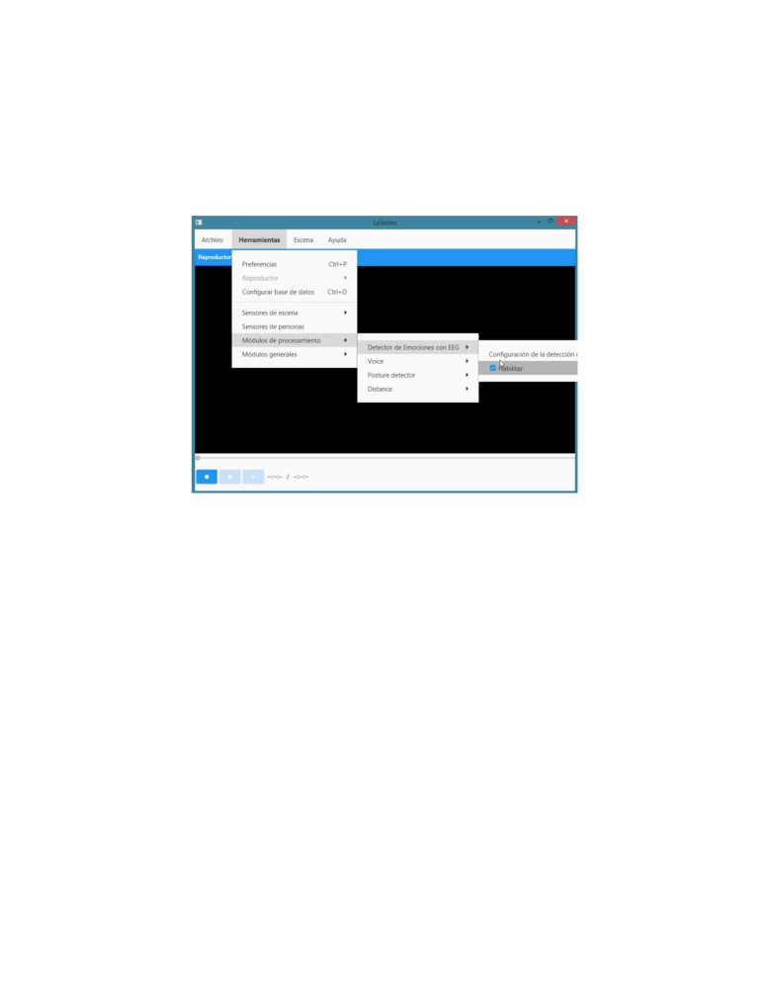
1.8. CU08: Seleccionar algoritmo de detección
Para seleccionar el algoritmo de detección, diríjase al menú "Herramientas", y luego en "Mó-
dulos de procesamiento" habilite o deshabilite los módulos que desee, tal y como se puede ver en
la imagen (1.24).
Figura 1.24: CU08-01-Seleccionar
En el caso del algoritmo de detección de emociones basado en entropía muestral y descom-
posición de funciones empíricas, en la imagen 1.25 se puede ver la ventana de configuración.
15
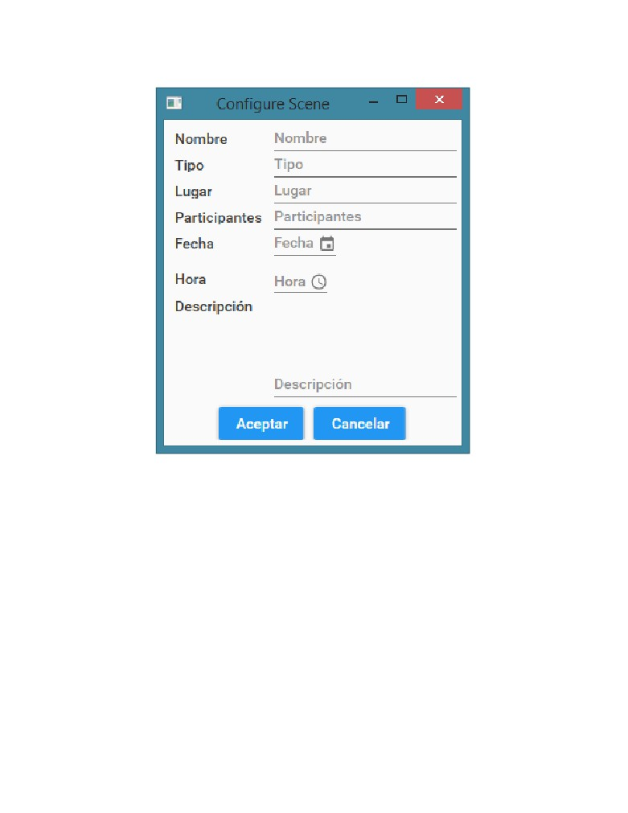
Figura 1.25: CU08-02-Configurar
1.9. CU09: Entrenar emoción
Para entrenar la emoción, diríjase al menú "Herramientas" y posteriormente a "Módulos ge-
nerales", y luego en "Clasificador de emociones con EEG", habilítelo y abra la ventana, como se
en en la imagen 1.26.
16
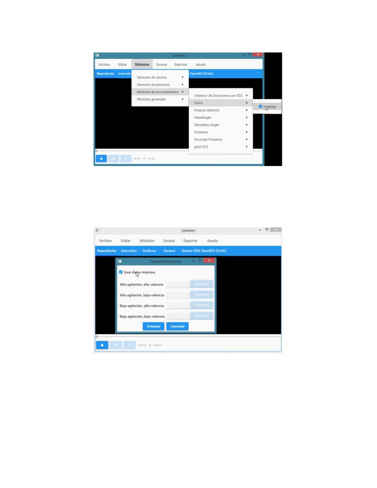
Figura 1.26: CU09-01-Menu
En la imagen 1.27 se puede ver la ventana en la cual se ingresan los archivos por cada clase,
y posteriormente hace click en "Aceptar" y espera mientras entrena hasta que salga el mensaje de
éxito.
Figura 1.27: CU09-02-Ventana
Alternativamente, puede usar los frames de clasificación por defecto, para ello haga click
sobre el check tal como se ve en la imagen 1.28.
17
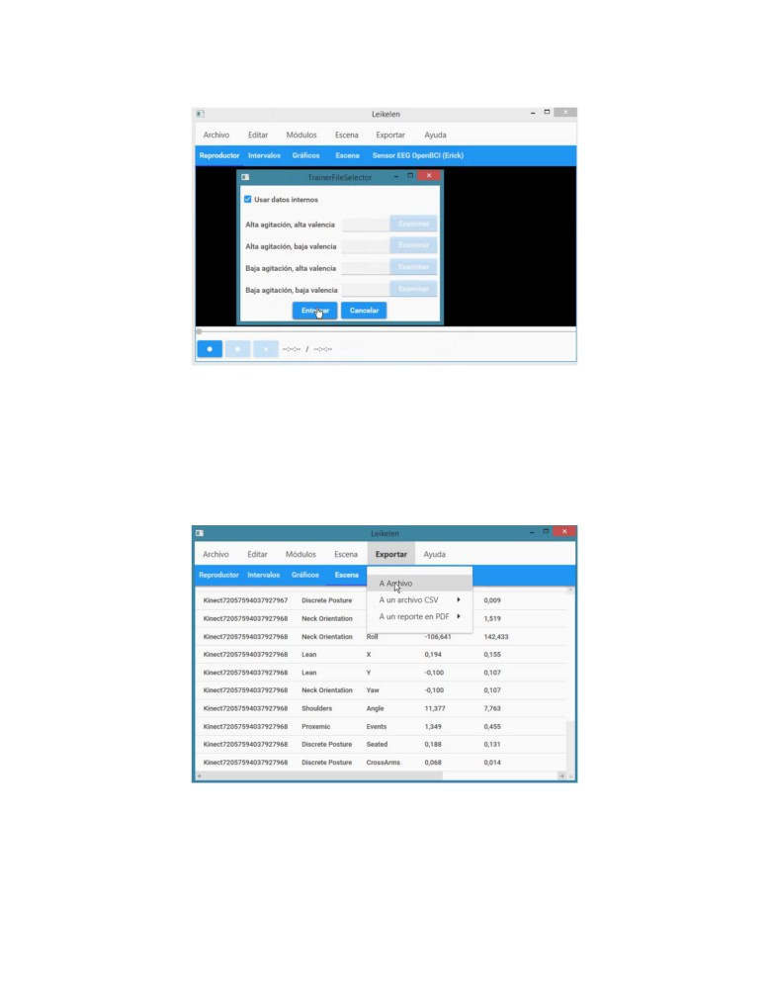
Figura 1.28: CU09-03-InternoAceptar
1.10. CU10: Exportar escena
Para exportar, diríjase al menú "Archivo" y luego haga click en "Exportar", como se ve en la
imagen 1.30.
Figura 1.29: CU10-01-MenuExportar
Puede guardar todos los archivos o simplemente los datos generados en un archivo sqlite
haciendo click en el check tal como se ve en la imagen 1.30.
18
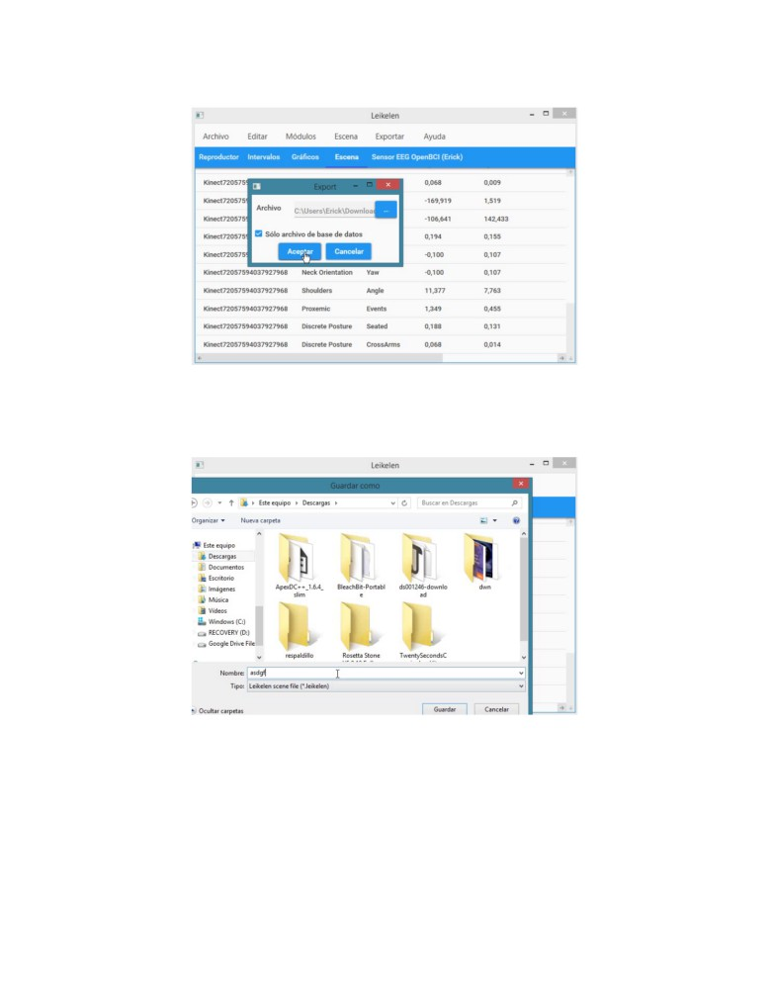
Figura 1.30: CU10-02-CheckBox
Seleccione la carpeta y nombre del archivo a guardar (ver imagen 1.31).
Figura 1.31: CU10-03-Guardar
Finalmente, haga click en Aceptar, y luego en "OK" del mensaje de éxito, como se ve en
1.32.
19
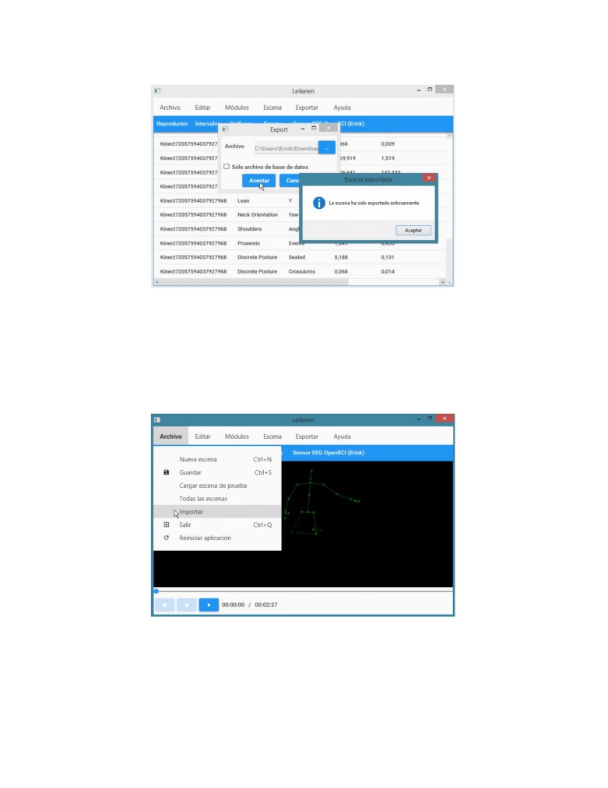
Figura 1.32: CU10-04-Aceptar
1.11. CU11: Importar escena
Para importar una escena previamente exportada, diríjase al menú "Archivo" y luego haga
click en "Importar", como se ve en la imagen 1.33.
Figura 1.33: CU11-01-Menu
Busque el archivo de la escena como se ve en la imagen 1.34. Es importante hacer notar que
sólo se pueden importar escenas que hayan sido exportadas en su totalidad, es decir sin marcar el
check de sólo base de datos.
20
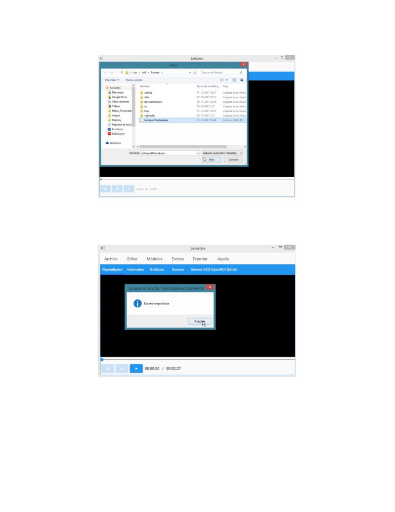
Figura 1.34: CU11-02-Abrir
Finalmente, haga click en "Abrir" y espere el mensaje de éxito, como puede ver en 1.35.
Figura 1.35: CU11-03-Aceptar
1.12. Casos de uso extra
A continuación se describen casos de uso heredados de la aplicación antigua creada por
Rodolfo Güiñez, y también el cómo encontrar y modificar las preferencias.
21
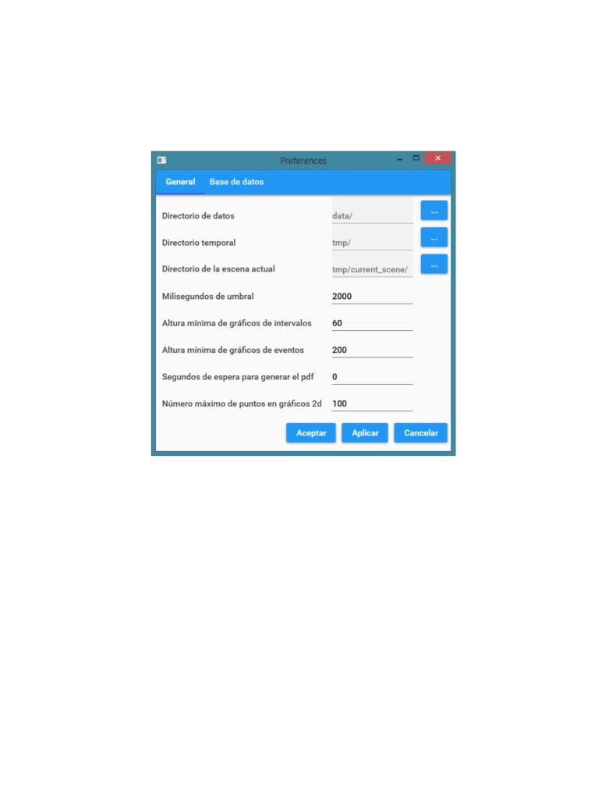
1.12.1. CUXX: Preferencias
Para ver las preferencias generales, haga click en el menú "Herramientas" y luego en "Prefe-
rencias generales". Se desplegará una ventana como se ve en la imagen 1.36.
Figura 1.36: CUXX-01-PrefGenerales
Además puede ver las configurar el motor de base de datos a utilizar, tal y como se ve en
la imagen 1.37, para ello puede pulsar sobre la pestaña "Base de datos" en la ventana de prefe-
rencias mencionada anteriormente; o bien directamente hacer click en el menú "Herramientas", y
posteriormente en "Preferencias de base de datos".
22
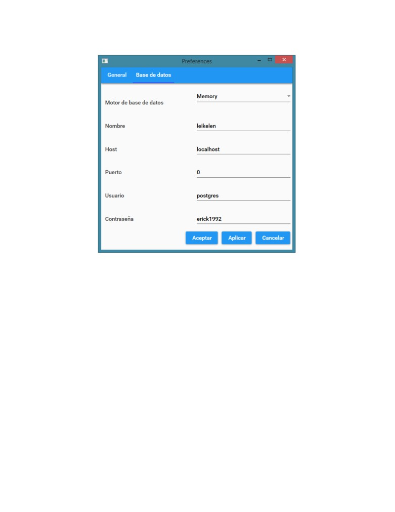
Figura 1.37: CUXX-02-PrefBD
1.12.2. CUYY: Gestionar Posturas
Para habilitar el sensor kinect, debe ir al menú "Herramientas", "Sensores de escena", "Kinect
v2" y hacer click sobre "Habilitar", tal y como se ve en la imagen 1.38.
23
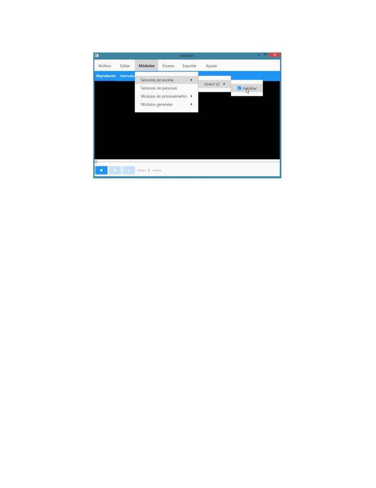
Figura 1.38: CUYY-01-HabilitarKinect
Cada postura se detecta en base a un modelo entrenado de maquina de aprendizaje. Los mode-
los se almacenan en archivos de extensión "gbd". Por lo tanto cuando se habla de gestionar posturas,
se habla de gestionar estos archivos. Si se desea detectar un nuevo tipo de postura, primero se debe
generar uno de estos modelos, lo cual se realiza con la herramienta VGB (Visual Gesture Builder),
y luego se debe agregar dicho archivo en la aplicación. Haciendo click en el menú "Herramientas",
y luego en "Módulos generales", "Configuración de gestos" y "Posturas", se accede a la ventana
donde para ver, agregar, editar y eliminar posturas, tal como se observa en la imagen 1.39.
24
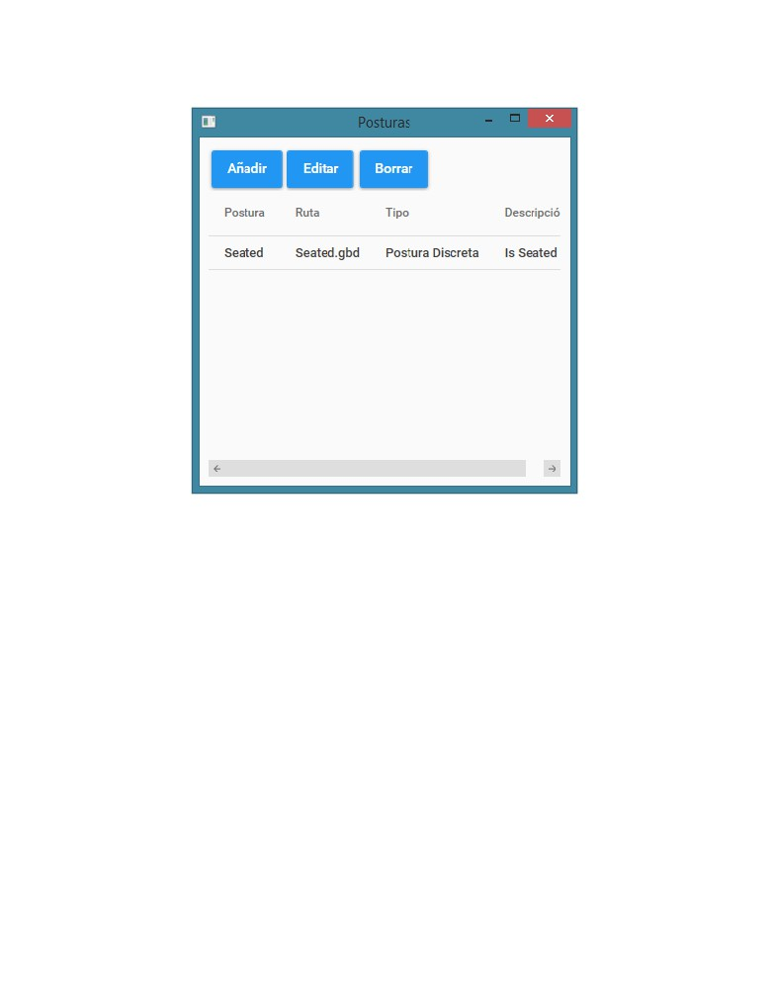
Figura 1.39: CUYY-03-PosturasVentana
Luego dentro de esta ventana, se puede agregar una postura (previamente generada por VGB),
haciendo click en el botón "Añadir". Se debe ingresar el nombre de la postura y la dirección del
archivo "gbd", tal como se muestra en la figura 1.40. Una vez la postura es agregada, el modelo es
copiado dentro del directorio de la aplicación, por lo cual es indiferente lo que ocurra con el archivo
original generado, este puede ser eliminado sin tener ningún problema.
25
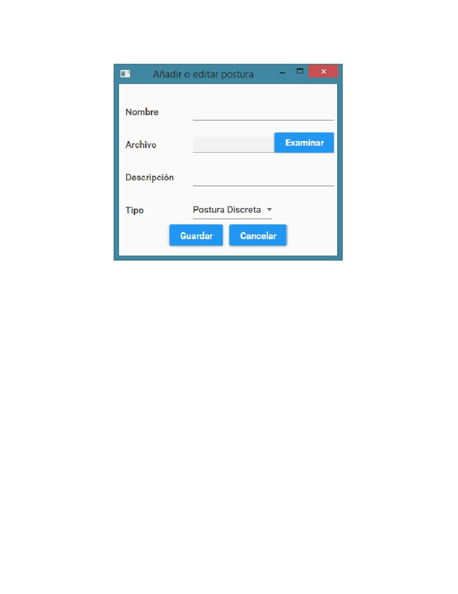
Figura 1.40: CUYY-04-PosturasEditar
26